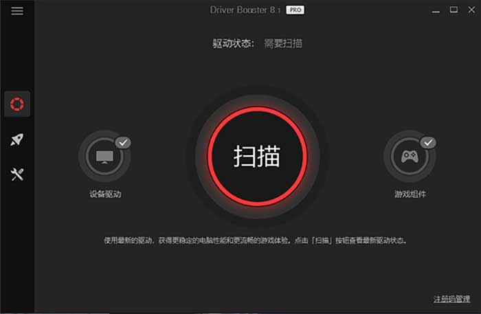

驱动动更新，驱动检测，驱动备份管理、离线驱动更新,IObit Driver Booster - 美少女cc | msncc
介紹
IObit Driver Booster，全球专业级驱动更新软件。检测硬件驱动更新、驱动备份管理、支持离线驱动更新，检测游戏组件、修复设备错误、无声问题、网络问题。提供游戏加速、系统优化、系统信息检测等功能。
IObit Driver Booster PRO 8.4.0.422 破解版IObit Driver Booster PRO 8.4.0.422 破解版IObit Driver Booster PRO 8.4.0.422 破解版
IObit Driver Booster特点与优势
* 拥有庞大的驱动数据库，一键下载更新所有过期/丢失/存在故障的驱动程序
* 设备驱动程序高精确匹配，采用不断优化的扫描逻辑和IObit独特的匹配算法
* 所有支持的驱动程序均已通过微软WHQL认证，并通过了IObit进行严格测试
* 提供用于系统游戏运行环境的检测游戏组件，及游戏加速优化功能
* 提供各种疑难问题修复功能：声音修复、网络修复、分辨率修复等
* 提供离线驱动更新工具功能，无需网络即可安装和更新驱动程序
新版特性
https://www.iobit.com/en/driver-booster-pro.php
V8.4
+增强数据库以支持更多新硬件驱动，如AMD Radeon RX 6700
+解决使用游戏总线后即使重启系统仍恢复游戏状态的错误
+修复与安装/升级试用版有关的错误
+不再支持Adobe游戏组件更新
+界面改进、修复一个已知错误
特点说明
* 官方版解包后，解锁专业版，第三方便携化处理
* 去主界面无用按钮：左侧操作中心、顶部的反馈
* 去工具界面无用项：软件更新 (检测国外软件的)
* 禁止自动检测升级，删除操作中心推广软件组件
* 禁止自动写入自动升级、UAC相关扫描任务计划
* 去无用菜单项、删除恶意程序、在线升级等文件

1: e6ot 2: hk5x選普通下載
天翼 ..
分享學習資訊 或 資源,如有失效的,請留言
更多下載通道正在更新....
資源收集于網絡,僅供學習研究,製作不易,若是喜歡,請考慮補上正版,再體驗離綫暢玩。
可到官網或其他平臺 搜索購買